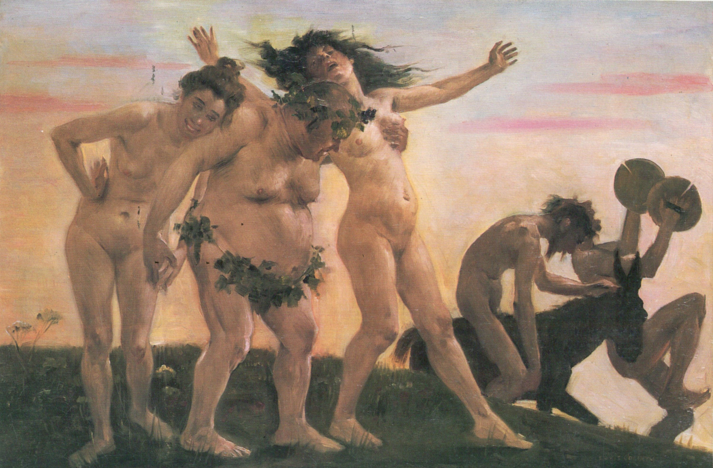

Konstantin Makovsky, Spring Bacchanalia, 1891
Lovis Corinth, Bacchanalia, 1898
Bacchanalia
The Ancient Roman Fesitval
The Bacchanalia were Roman festivals of Bacchus, the Greco-Roman god of wine, freedom, intoxication and ecstasy. They were based on the Greek Dionysia and the Dionysian mysteries, and probably arrived in Rome c. 200 BC via the Greek colonies in southern Italy, and from Etruria, Rome's northern neighbour. They were almost certainly associated with Rome's native cult Liberalia which is dedicated to Liber and spouse Libera, also known as Proserpina. Like all mystery cults, the Bacchanalia were held in strict privacy, and initiates were bound to secrecy; what little is known of the cult and its rites derives from Greek and Roman literature, plays, statuary and paintings. However, unlike other mystery cults, the Bacchanalia had two different types of religious functions. The first was celebrated by the public, which brought attention to dramatic plays - either tragedy or Satyr-comedic play. Although, this type of publicity hadn't occurred until centuries after the Bacchanalia Scandal. The second belonging to the sexual frenzy and unpolitical cult, which focuses on the release of the sexual tension among people to appease their desires to feel connected to Bacchus.
Once the Bacchanalia had become popular, the Roman Senate considered them a threat, believing it was designed to rebel against their political views, thus they wanted to suppress the mystery cult to avoid any kind of rebellion against the Senate.
Senatorial legislation to reform the Bacchanalia in 186 BC attempted to control their size, organization, and priesthoods, under threat of the death penalty. The reformed Bacchanalia rites may have been merged with the Liberalia festival. Bacchus, Liber and Dionysus became virtually interchangeable from the late Republican era (133 BC and onward), and their mystery cults persisted well into the Principate of Roman Imperial era.